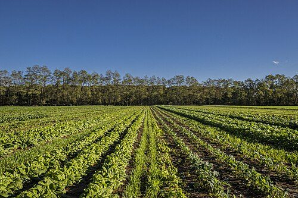
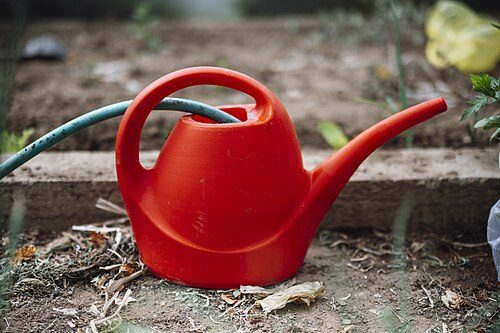
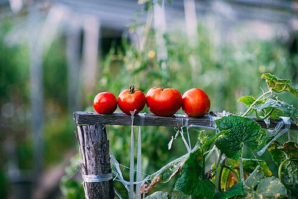
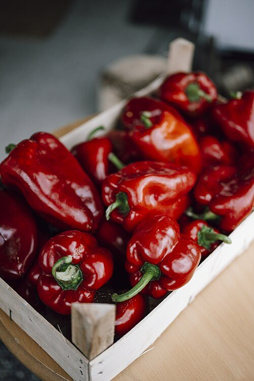
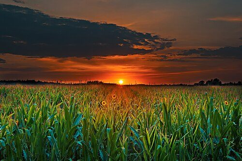

カフェ / 静岡県御殿場市
農家カフェHARU
静岡県御殿場市にある「農家カフェHARU」のご案内ページです。営業時間やメニューなど、詳しいことは準備中。まずはInstagramをのぞいてみてください。
制作側の連想
水銀柱のように、Hから Uへ。
制作側の連想で、お店の理念・由来とは無関係です。店名の「HARU」は4文字。このページでは、温度計の水銀柱のように、HからUへ1文字ずつ液面が上がっていく見せ方にしました。写真も「ひんやり側(最低)」と「あたたかい側(最高)」に分けて並べています。お店の考えや提供内容とは関係のない、制作側の遊びです。
最低と最高(イメージ)
ひんやり側と、あたたかい側。
写真は御殿場市の風景ではありません。色の印象で選んだ、国外・撮影地不明のフリー素材です。
MIN 最低


MAX 最高



ご案内
お店のこと(確認できたものだけ)
| 所在地 | 〒412-0037 静岡県御殿場市中清水３３３ |
|---|---|
| 電話 | 080-1621-6259 |
| 営業時間 | 準備中 |
| 定休日 | 準備中 |
| ご予約 | 準備中 |
| 駐車場 | 準備中 |
| SNS | Instagram @farmer.cafe.haru |